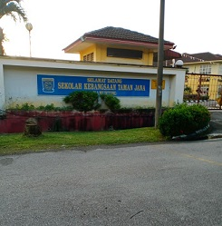
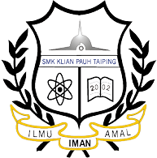
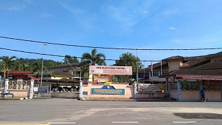
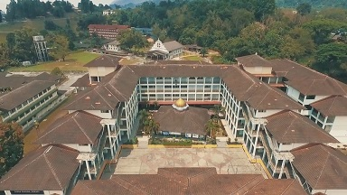
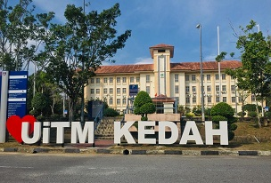

| Primary School SEKOLAH KEBANGSAAN TAMAN JANA, KAMUNTING PERAK I started studying from 2007 to 2012. I got an unsatisfactory result in UPSR which is only 1A from five subjects and have received the best personality award 2 times.  |
| Secondary School  SEKOLAH MENENGAH KEBANGSAAN KLIAN PAUH, TAIPING PERAK I continued my schooling from 2013 to 2017. Obtained 3A from eight subjects in SPM results. At the high school level, I was actively involved in several school activities both academically and co-curricular and have collect several awards.  |
| University UNIVERSITI TEKNOLOGI MARA CAWANGAN SUNGAI PETANI, KEDAH After finishing school,I start continued my studies on 2018. I was offered in the field Diploma of Information Management Course and I have successfully completed my diploma in 2021.In early 2021, I got the opportunity to continue studying at the same UITM in the field of Bachelor Of Information Science (HONS.) Library Management. I am an application student and currently in semester 3.  |
This websites for IMS456 |